カテゴリ: まちあるき
-
パンダ！
パンダ見てきたよ！ うえのにパンダがやってきた！ なんかこのパンダ、カラダの白黒バランスが変だよね？ あっ！こいつもだ！ 同種パンダ。 パンダ記念まんじゅう。 頭からがぶがぶいっちゃってく…
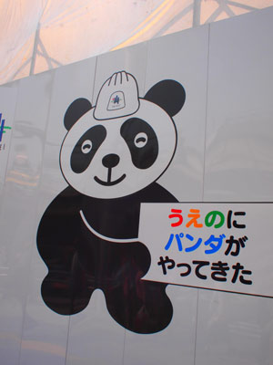
-
ター坊くん
キボウシインコの「ター坊」くん。 雷門横の裏道を左にはいったとこにある「旅館ことぶき」の箱入りインコ！ 夕方このあたりを歩くと、飼い主のおばあちゃまが肩に乗せて散歩してたりする。 三越で売られて…
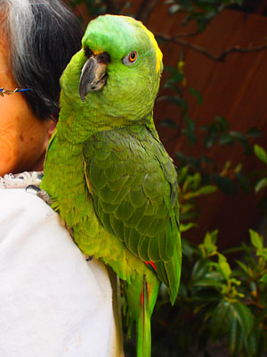
-
浅草寺大提灯のひみつ
浅草寺の宝蔵門大提灯の裏側には動物が隠れてる！ ね！ね！ ほら！ メー！
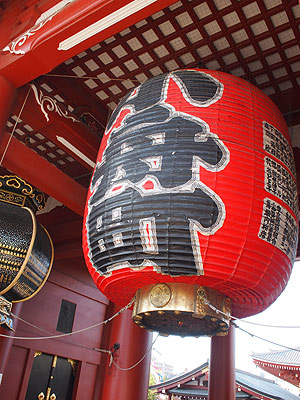
-
隅田川テラス散歩
というわけで、帰り道。 なんだかんだで、4キロ以上歩いてきてるけど、信号を通っていないせいかそんなに長く歩いている気がしない。というわけで、再び隅田川沿いを歩いて帰ることに。 サイフの中に、マックの…
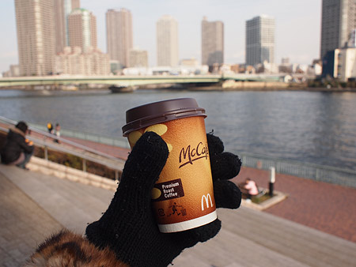
-
橋の下めぐり
はたと気がついた、ある休日。 「ウチからずーっと信号渡らずに遠くまで行けるんじゃないかなー？」 ウチの前は隅田川。その川岸はずーっと遊歩道。途中迂回しなくてはいけない箇所もあったような気がするけど、…

-
↑おへんじ
さて、総集編でございます。 銀座のワインバーにてテイスティング祭り 1993と2004のブルゴーニュ。 グリオット・シャンベルタン、ヴォーヌ・ロマネ、ニュイサンジョルジュ1er、クロ・ド・ヴージョ、…

-
元旦都内
あけましておめでとうございます。 2010！いきなり月食からはじまった2010年。今月はひと月に2度満月があるブルームーンだったりして月が気になるスタートとなりました。 起床後、微妙なお節。お弁当強…
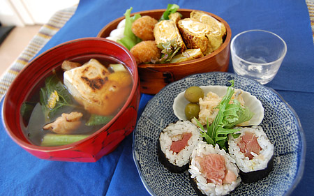
-
うえのびより
西洋美術館の常設展示を見にいってまいりました。 企画展がないからすっきりゆっくり見ることができていいなー。 本当に久しぶりの西洋美術館。 ここ最近の大混雑企画展からはすっかり足が遠のいてしまって…
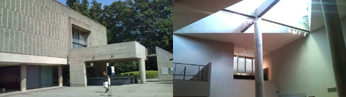
-
有楽町→新橋散歩
日比谷シャンテのよこっちょのゴジラを起点に…
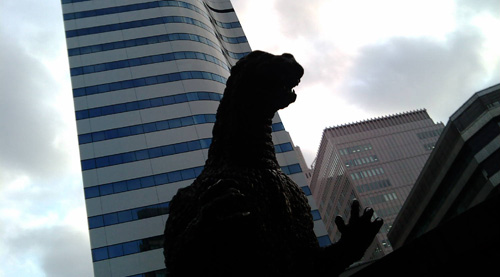
-
>mimiさま
裏道を散歩。 ここは通ってよかったのかなー？茂みを抜けていくと スズメのお宿。 ずらーーーーっと電線に並んだふくら雀。 寒さに羽を膨らませて、まんまる。 そーっとそーっと近づいたけど、やっぱり飛…
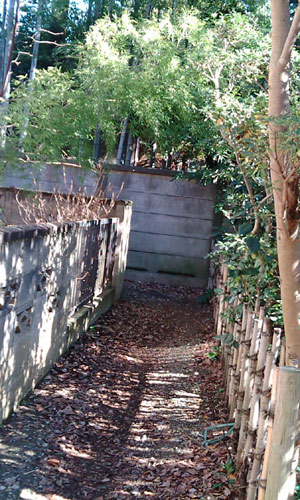
-
テオ・ヤンセン展
すっかり忘れておりました…行かなきゃ！ テオ・ヤンセン展 開催場所は、正月にクルクルクルミオ～♪のスケートリンクイベントを見た場所のよう。 リンク先の動画で見られる、浜辺で風を受ける作品の音がきも…

-
そっからまたつぎのひ
とにかく散歩。 表参道から青山方面に出て、キラー通りから原宿方面に。 超ノラさんに会う。 プラプラ歩き終点はぐるっと戻って表参道ヒルズ。 キーラキラ。ハイパー箏奏者とゆー方の演奏があった。ハイパー…

-
つぎのひ
赤坂に移動。 今日はおともだちに会ったり、飲んだりなんだりでぜんぜん写真がありませぬ。 とゆーか、大晦日からずーーーーーーっと飲んでます。 銀座の閑散っぷりもなかなかでしたが、赤坂の閑散っぷりも素晴ら…

-
がんたん
新年。汐留方面に祈る。 築地本願寺に初詣。 石造りであったり、パイプオルガンがあったり、結婚式を行えたりと教会のような不思議なお寺。 たしかにここの音の響きは海外の教会の音の響きに良く似ている。 …

-
おおみそか
仕事で年始早々出社しなくてはいけなかったのだけど、どーあがいてもチケットがとれず、年末から逗留することに。鹿児島に里帰りしている同僚は8時間かけて陸路で帰ってくるとゆー話を聞いたけど、いったいこの年末…

-
美術館めぐりとマメ
実家からバスに乗って。三連休初日で混雑している都内を走る。 こっちのバスはちょっと遅れているだけでも、丁寧に理由を伝えて謝罪。 都市圏は時間の隙間ってぜんぜん無い。 常に電車が来て、バスが来て、隙間と…
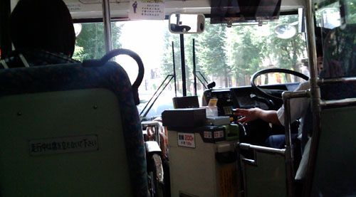
-
そらしぃねー
浜松町のこっちがわの夜って新橋に近い雰囲気なのねー 立ち飲みのモツ焼き屋とかあっていーかんじ。 なんか花火の音するけどどこで上げてるのかなー トーキョータワーはやっぱり良いっす。 たまには都心部でリ…
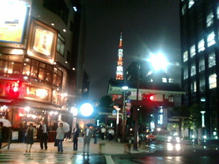
-
8月30日まとめ
晴れてます。 大雨警報が信じられない空。 モノレールと電車を乗り継ぎ… この奇妙なキャラクターは… 風太…くん？か？ 送迎バスに乗って。 久しぶりにたどり着いたのは。 川村記念美術…

-
8月29日まとめ
朝食。 大きな紀州梅と細かく刻んだ漬物とご飯が美味しかった。 それにしても、外国の宿泊客はみんな洋食バイキングを選んでいたなぁー。 朝から厳しい顔したオジサマばかりが和食に来てましたわー。 ピカピ…
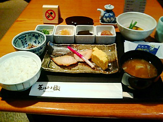
-
8月28日まとめ
当初はケータイからリアルタイム更新しよーかと思っていたけど、 まどろっこしくなっちゃっいました。そんなわけで帰宅したのでトーキョーその後まとめですー ジャパン。良い店名。ここらへんは欧米の観光客が…
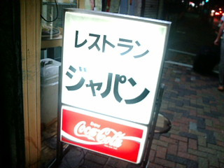
-
モノレール
天空橋通過。 この駅通るたびドラクエのテーマが頭の中流れるのは私だけ？ それにしても暑い。 涼しいの期待してたんだけどなー
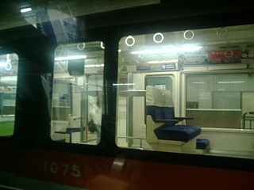